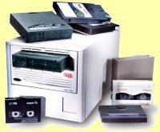

En mettant tranquilement à jour mes liens linux je suis tombé sur une information sibylline sur le site de Lionel Suz. Ce dernier serait le premier à être Stockbanddonné par Google. Stockbanddonné ? Qu'est ce que ça signifie ?
 Apparement ce serait un mot créole pour parler de stockage de données... Le premier lien de Lionel me donne en fait, une réponse plus précise: i974, le forum des webmasters réunionnais organise un concours de référencement. deux mois, du 26 mai au 26 août pour se retrouver en première position des résultats Google sur la recherche «stockbanddonné». Deux mois pour faire connaitre un mot. C'est court mais c'est aussi suffisant pour créer des myriades de pages, forum et minisites, une boutique et même un blog dédié et le site officiel, tout ça pour un mot inconnu. Pas si inconnu que ça puisque les gagnants remportent un disque dur. Le disque dur qui permet de stock ban données.
Ce concours montre quand même qu'il y a une communauté de webmasters
actifs à la Réunion, des webdesigners et des sociétés de création de
site web et des passionnés. Il est loin le temps ou je tentais, il y a
10 ans, de
convaincre mon entourage de l'utilité de l'internet. À cette époque je
mettais en ligne une petite page web avec une liste de liens vers des
sites réunionnais, difficiles à trouver à mon goût. Mon premier lien
pointait vers creole.org. Le site est toujours en ligne mais Bertrand,
son webmaster ne participe pas aujourd'hui au concours stockbanddonné.
Qu'importe,la relève est là!!! Google affiche déjà plus de 35 000 pages pour cette requète. Même si
ce genre de concours n'est pas nouveau, c'est le premier à la Réunion,
avec un mot au son créole.
Depuis 10 ans, cette page de liens est devenue le site que vous lisez aujourd'hui et je suis fier de vous avoir comme lecteur(trice). C'est peut être grâce à une notoriété construite en dix ans que vous venez me lire aujourd'hui. Il est bien sûr aussi possible en quelques mois de créer du buzz autour du mot stockbanddonné et être bien classé dans google mais je pense que la meilleure récompense quand on fait un site web est celle des lecteurs.
En écrivant cet article, je participe de fait au concours puisque je vais faire aujourd'hui partie des 35 000 pages sur ce mot. Loin de moi l'idée d'essayer de gagner, je n'ai que trop peur de temps pour ça et surtout, le 26 août je serais loin de tout ordinateur pour vérifier le classement. Il ne me reste plus qu'à souhaiter bonne chance aux webmasters réunionnais.